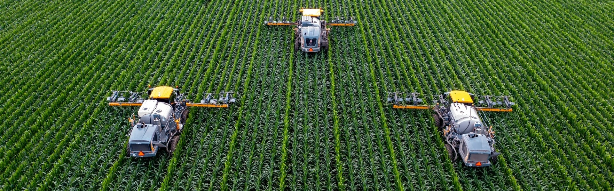
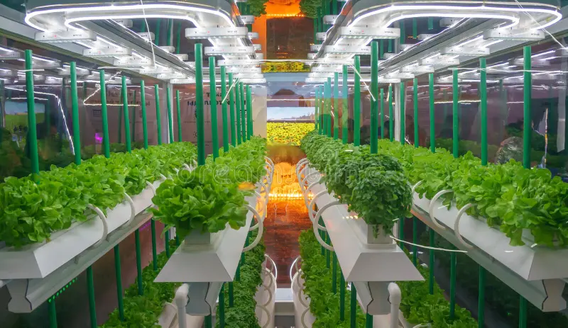
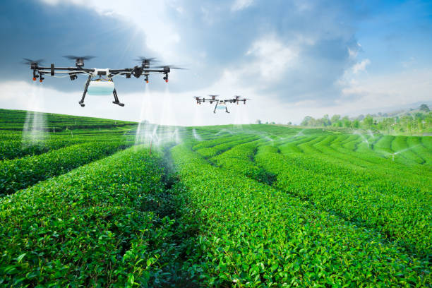
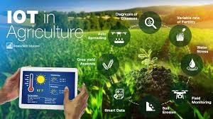
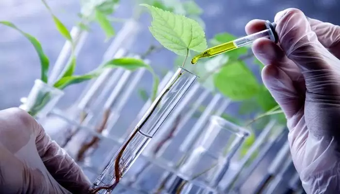

Discover the latest agricultural innovations and sustainable farming practices
Modern farming techniques combine traditional wisdom with cutting-edge technology to maximize yield while maintaining environmental sustainability. Our comprehensive guide covers various aspects of contemporary farming practices.

Using GPS technology and sensors to optimize field-level management with regard to crop farming.

Growing plants without soil, using mineral nutrient solutions in water.

Automated irrigation systems with sensors and weather-based scheduling
Using artificial intelligence to analyze data and make farming decisions.

Connected devices and sensors that provide real-time monitoring and control.

Using biological processes to develop improved crop varieties and pest control.
Higher crop production with optimized resources
Environment-friendly farming practices
Efficient water management systems
Reduced operational costs and higher profits